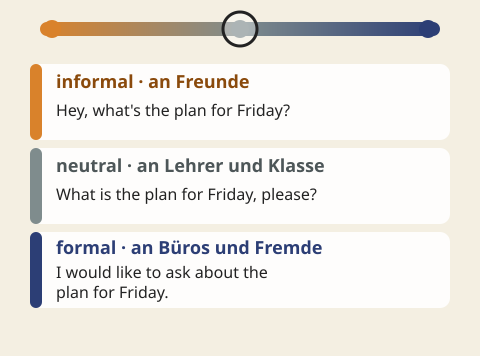

Formell und informell
Mit einem KI-Tutor lernen
Ein KI-Tutor erklärt dir diese Seite und hilft dir bei den Aufgaben. Wähl deinen Assistenten:
Mit Claude öffnen Mit ChatGPT öffnen Mit Mistral Vibe öffnen
Du nutzt dein eigenes Konto beim Anbieter. Der Assistent ist kein Angebot von lernapps.net: lernapps liefert nur Inhalte und Aufgaben. Die Wahl gilt für alle Seiten, nur auf diesem Gerät.
Worum es geht
Der Text ist gegliedert, aber noch fehlt etwas: Wie klingt er? Du schreibst an Freunde anders als an Lehrer und anders als an ein Büro. Danach kannst du formelle und informelle Wörter und Ausdrücke unterscheiden und passend zur Situation wählen.
Aufgabe
Lösung
Wie im Chat mit Freunden, mit Kurzformen und Slang
Mr Hill gehört nicht in deinen Freundeschat. Slang und Kurzformen klingen für einen Lehrer zu locker.
Höflich, in ganzen Sätzen und ohne Slang richtige Antwort
So schreibst du an einen Lehrer: freundlich, aber ohne Slang.
So steif wie möglich, mit sehr schweren Wörtern
Zu steif ist auch falsch. Schwere Wörter machen eine Nachricht nicht besser, sie klingen nur seltsam.
Der Ton hängt vom Leser ab. Einem Lehrer schreibst du höflich, aber nicht übertrieben steif.
Lesestück · Dieselbe Bitte, dreimal
Sophie bittet dreimal um dasselbe, aber an drei verschiedene Leser. Lies die Nachrichten in drei Abschnitten. Die Zahlen vor den Zeilen brauchst du bei den Aufgaben. Schwere Wörter stehen hier.
| Englisch | Deutsch |
|---|---|
| poster | das Plakat |
| put up | aufhängen |
| tape | das Klebeband |
| permission | die Erlaubnis |
| display | aushängen, zeigen |
| stiff | steif |
| formal | förmlich |
| whether | ob |
- Sophie to Ellie: Hi Ellie! Can you help me put up the new poster? It's for The Millbrook Messenger. Meet me at the library door at twelve. You're the best!
- Ellie to Sophie: No problem! I'll bring the tape. See you there!
Aufgabe
Lösung
Ellie soll beim Aufhängen des Plakats helfen richtige Antwort
Richtig: Sophie fragt, ob Ellie helfen kann, das Plakat aufzuhängen.
Ellie soll das Plakat für die Zeitung malen
Das Plakat ist schon da: Sophie spricht vom neuen Plakat. Gefragt ist Hilfe beim Aufhängen.
Ellie soll in der Bibliothek ein Buch holen
Die Bibliothek ist nur der Treffpunkt: Sophie wartet dort an der Tür.
Sophie bittet um Hilfe mit dem Plakat und nennt den Treffpunkt.
- Sophie to Mr Hill: Dear Mr Hill, the first poster for The Millbrook Messenger is ready. Could you help us to put it up on the notice board in the corridor? We would like to do it before lunch. Thank you very much. Best wishes, Sophie
- Mr Hill: Of course, Sophie. For the main hall, you need permission from the school office. Please send them a formal message.
Aufgabe
Lösung
Sie schreibt länger, und darum klingt es höflich
Länge allein macht nichts höflich. Es kommt auf die Wörter an.
Sie benutzt schwere Wörter wie permission
Das Wort permission steht erst in Zeile 4 und in Zeile 5, nicht in Zeile 3.
Mit Dear Mr Hill und Could you, ohne Kurzform richtige Antwort
Richtig: Anrede, Could you und Thank you very much sind höflich. Eine Kurzform wie it's gibt es in Zeile 3 nicht.
Zeile 3 ist höflich und neutral. Zeile 1 hat Kurzformen und lockere Wörter.
- Sophie to the school office: Dear Sir or Madam, I am writing to ask for permission to display a poster in the main hall. The poster is for a new school newspaper, The Millbrook Messenger. I would be grateful if you could tell me whether this is possible. Yours faithfully, Sophie
- Amir: Wow, that is a long message for one poster!
- Peter: It sounds polite, but I wouldn't send it to Ellie. "I am writing to ask for permission" is too stiff for a friend.
- Sophie: Right. My words change with my reader: a friend, a teacher, the office.
Aufgabe
Lösung
Zeile 7 sagt, dass ein steifer Satz zu einer Freundin nicht passt richtige Antwort
Richtig: Peter findet den Satz aus Zeile 5 für einen Freund zu steif.
Zeile 8 sagt, dass sich die Wörter mit dem Leser ändern richtige Antwort
Richtig: Sophie fasst es zusammen: ein Freund, ein Lehrer, das Büro.
Zeile 6 sagt, dass die Nachricht an das Büro zu kurz ist
In Zeile 6 sagt Amir das Gegenteil: Die Nachricht ist lang.
Die Zeilen 7 und 8 sagen, dass Sophie die Wörter nach dem Leser wählt.
Der Ton-Regler

© CC-BY-4.0Der Ton-Regler von links nach rechts gelesen: Der Knopf steht in der Mitte, aber du schiebst ihn je nach Leser. Achte auf die Beispielsätze.
Der Ton-Regler hat drei Stellungen. Du stellst ihn nach dem Leser ein.
- informal für Freunde: Kurzformen (short forms), lockere Wörter wie hey und cool, ein Ausrufezeichen.
- neutral für Lehrer und Klasse: ganze Sätze, höfliche Fragen wie „Could you …?“ und Wörter wie please und thank you.
- formal für Büros und Menschen, die du nicht kennst: keine Kurzformen, Sätze wie „I would like to ask …“.
Auch Anrede und Gruß ändern sich. Schau dir dazu die Zeilen 1, 3 und 5 an.
Merke
Erst fragen: Wer liest? Dann den Regler einstellen. Bleib in einem Text bei einer Stellung: nicht locker anfangen und steif aufhören.
Übung
Aufgabe
Lösung
Richtige Antwort: Hey, can you give me a pen? I'm late! – informal; Could you give me a pen, please? – neutral; I would be grateful if you could give me a pen. – formal
Kurzformen und hey sind informal. Could you und please sind neutral. I would be grateful if ist formal.
Aufgabe
Setze Anrede oder Gruß ein. Du kennst die Wörter aus den Zeilen 1 bis 5.
Tipp
Anrede und Gruß müssen zum Leser und zum Ton passen.
- Mail an das Schulbüro: Wie fängt sie an? → …, I am writing about the music room.
- Dieselbe Mail: Wie endet sie? → Thank you for your help. …, Sophie
- Nachricht an Ellie: Wie endet sie? → Hi Ellie, can you help me? …, Sophie
Lösung
- Dear Sir or Madam, I am writing about the music room.
- Thank you for your help. Yours faithfully, Sophie
- Hi Ellie, can you help me? See you, Sophie
Ein formaler Brief an Sir or Madam endet mit Yours faithfully. Zu Hi passt ein lockerer Gruß wie See you.
Aufgabe
Schreibe den Satz für den Leser um, der vor dem Satz steht.
Tipp
Lass weg, was für diesen Leser nicht passt. Oder schreibe es so, wie du es einem Freund sagst.
- To Mr Hill, no short form: I can't come to the meeting.
- To Mr Hill, polite: Hey, can you tell me when the meeting is?
- To Ellie, in a chat: I am writing to ask if you are free on Friday.
Lösung
- I cannot come to the meeting.
- Could you tell me when the meeting is, please? (auch richtig: Could you tell me when the meeting is?)
- Hi Ellie, are you free on Friday? (auch richtig: Hi Ellie, are you free Friday?; Hey Ellie, are you free on Friday?; Hey Ellie, are you free Friday?)
An Mr Hill schreibst du höflich ohne Kurzform und ohne Hey. An Ellie darf es kurz und locker sein.
Aufgabe
Höre den Satz und schreibe ihn auf.
- KI
- KI
- KI
Lösung
- Write a careful message to your teacher.
- Friends often use short forms in a message.
- A formal letter needs polite words and a clear ending.
Die Sätze sagen, wie Ton und Leser zusammenpassen.
Selbst schreiben
Aufgabe
Höre die Sätze und sprich sie nach. Der erste ist informal, der zweite neutral, der dritte formal.
- Hey, are you ready for the meeting?KI
- Could you please send me the answer tomorrow?KI
- Thank you for your time and your answer.KI
Zum Aufnehmen braucht diese Aufgabe JavaScript. Die Beispiele kannst du auch ohne anhören.
Lösung
- Hey, are you ready for the meeting?
- Could you please send me the answer tomorrow?
- Thank you for your time and your answer.
Offene Aufgabe
Vergleiche die Nachrichten in den Zeilen 1, 3 und 5. Welche würdest du am liebsten schreiben, und warum? Schreibe zwei bis drei Sätze auf Englisch.
Eine gute Antwort enthält:
- Du nennst eine der drei Nachrichten. Nachlesen
- Du gibst einen Grund mit because. (Form)
- Du schreibst in ganzen Sätzen. (Form)
Lösung
I would like to write the message in line 1 because it is short and easy. Friends do not need many words. Die App bewertet deinen Text nicht. Vergleiche ihn mit den Punkten.
Offene Aufgabe
Du möchtest am Freitag den Musikraum für eine Sitzung der Zeitung nutzen. Schreibe die Bitte zweimal: kurz an Amir und förmlich an das Schulbüro.
Eine gute Antwort enthält:
Lösung
Hi Amir! Can we use the music room on Friday? I think it's free after lunch. See you!
Dear Sir or Madam, I would like to ask whether we may use the music room on Friday afternoon for a meeting of the newspaper team. I would be grateful for your answer. Yours faithfully, Sophie
Die App bewertet deinen Text nicht. Vergleiche ihn mit den Punkten.
Wie es weitergeht
Du kannst den Ton jetzt einstellen. Auf der nächsten Seite hältst du einen Vortrag: Sophie erzählt der Klasse von der Schülerzeitung, im neutralen Ton.
Fehler gefunden oder eine Idee für diese App?